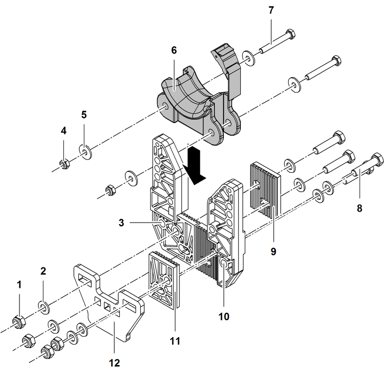

Transporthalterungen für CFK-Haltestangen montieren

Fig. 5902: Transporthalterungen für CFK-Haltestangen montieren
Fig. 5902: Transporthalterungen für CFK-Haltestangen montieren
Mutter (4x) | |
Scheibe (8x) | |
Element der Transporthalterung | |
Mutter (2x) | |
Scheibe (4x) | |
Erweiterungselement für CFK-Haltestangen | |
Schraube (2x) | |
Schraube (4x) | |
Element der Transporthalterung | |
Element der Transporthalterung | |
Element der Transporthalterung | |
Montageblech |
Element 11 bei Element 10 einsetzen. |
Scheiben 2 auf Schrauben 8 positionieren. |
Schrauben 8 bei Transporthalterung und Montageblech 12 einsetzen. |
Schrauben 8 mit Scheiben 2 und Muttern 1 sichern. |
Erweiterungselement 6 in Transporthalterung einsetzen. |
Scheiben 5 auf Schrauben 7 positionieren. |
Schrauben 7 bei Transporthalterung und Erweiterungselement 6 einsetzen. |
Schrauben 7 mit Scheiben 5 und Muttern 4 sichern. |